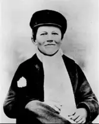
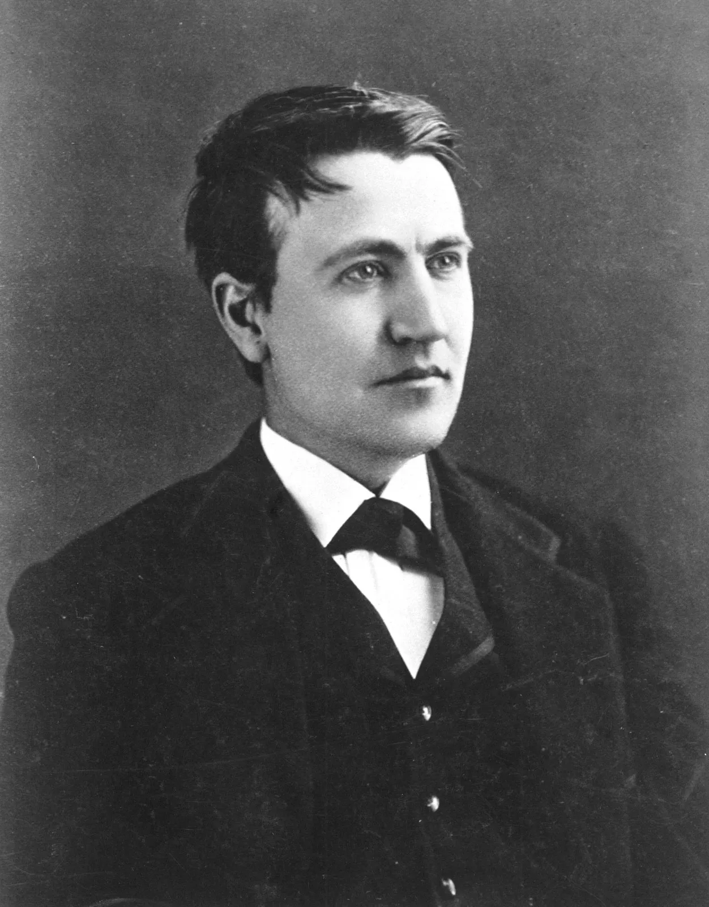
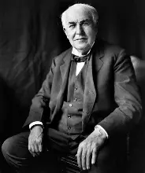

Línea de Vida: Una Evolución de Ingenio

1847: El Origen
Hijo de un carpintero y una maestra, nació en Ohio. Fue un niño curioso que instaló su primer laboratorio en el sótano de su casa a los 10 años.

1863: El Telegrafista
Tras salvar al hijo de un jefe de estación, aprendió Morse. Vagó por el país utilizando su sueldo para piezas de repuesto para sus experimentos.

1876: El Mago
Fundó el primer 'laboratorio de investigación' en Menlo Park. Aquí perfeccionó el método de invención en equipo, registrando patentes a un ritmo sin precedentes.